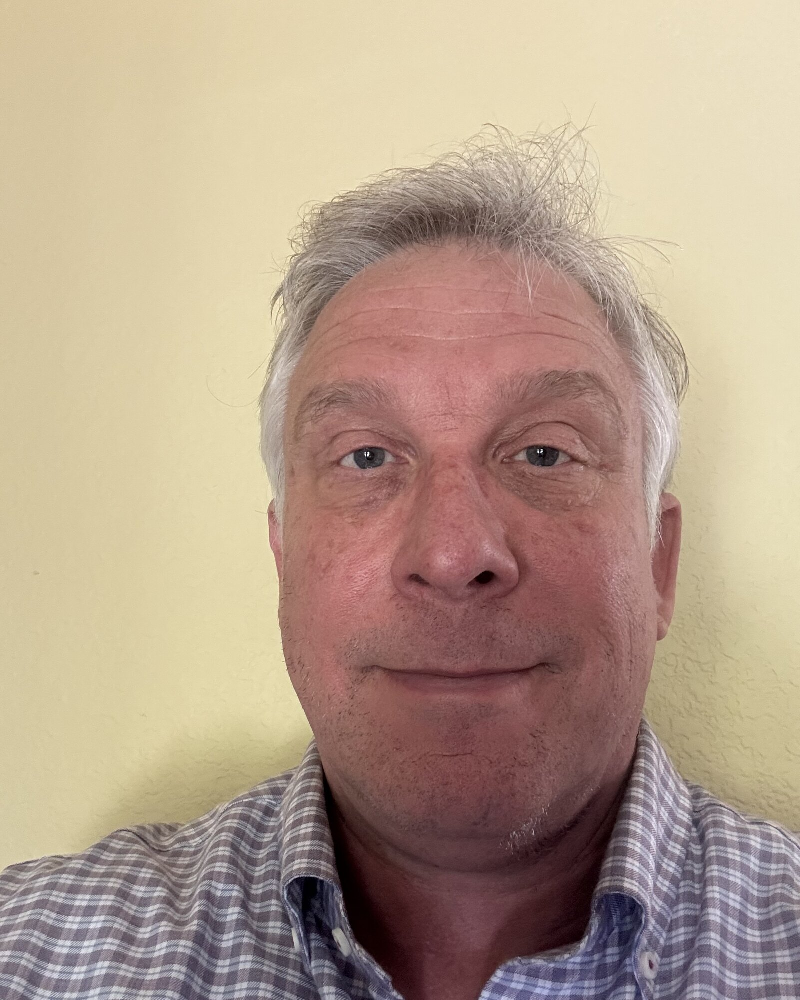

Finance organizations don't fail. They outgrow their systems.
I help CFOs and finance teams modernize FP&A, reporting, and finance technology to scale with growth, improve decision-making, and reduce operational risk.
Work with me →About
A foundation as a CPA, with three decades bridging finance and technology.
I lead end-to-end transformation initiatives, from strategy through implementation and adoption, aligning stakeholders across finance and technology while delivering measurable business outcomes.
My experience spans telecommunications and global banking, specializing in turning complex requirements into scalable, high-impact solutions. Known for a hands-on, data-driven approach, I translate complex concepts into actionable insights that drive execution.
I'm open to finance transformation leadership, consulting, and advisory opportunities where I can help organizations build scalable, data-driven finance functions.
Featured Writing
Selected presentations on EPM, FP&A, and Essbase modernization.
-
The Role of Process Owners in Successful EPM Implementations ↗
-
High Performance Driver-Based Modeling at AT&T ↗
-
Utilizing Key Aspects of Oracle Essbase to Run Finance in Sixth Gear ↗
Examples of using Essbase to solve large number-crunching needs.
-
How To Collect Budget Data Across 20 to 30 Dimensions ↗
Oracle Planning solution for collecting sparse data sets across many dimensions.
Expertise
Where finance, data, and operating systems meet.
- Finance Transformation (Record-to-Report, Plan-to-Forecast)
- FP&A Strategy, Modeling & Forecasting
- ERP / EPM Implementations (Oracle Hyperion, Essbase)
- Financial Reporting & Analytics Modernization
- Data Governance & Regulatory Reporting (BCBS 239)
- Cross-functional Program Leadership
Experience
Three decades of hands-on finance and systems leadership.
Finance Transformation & FP&A Consultant
- Advising growth-stage technology companies on financial planning, reporting automation, and finance systems design.
- Supporting data modeling, KPI frameworks, and executive dashboards for improved decision making.
- Partnering with finance leaders on ERP optimization, forecasting models, and operational analytics.
Sr. Manager, Business & Data Analysis · System Manager, Regulatory Stress Testing Platform
- Led implementation and ongoing operation of the bank's Federal Reserve Stress Testing (CCAR FR Y-14) Oracle platform, cutting preparation time by 90% and remediating MRA orders.
- Built FR Y-15 Systemic Risk reporting on Axiom SL Controllerview, reducing compilation effort by 80% and lowering error risk.
- Implemented LawLogix I-9 and Saba SaaS-to-Workday HR integrations, saving $2M in annual resource costs.
- Assessed 23 financial crimes systems against BCBS 239 maturity, presenting quarterly executive dashboards to the managing director.
Associate Director, Corporate FP&A
- Designed the Hyperion Financial Management consolidation platform, cutting reporting time by 50% and saving $500K per year.
- Introduced Oracle Hyperion Essbase to AT&T as the modern FP&A engine, increasing accuracy by 90% and doubling efficiency.
- Built 10-year enterprise planning models replacing 30+ spreadsheets with 10× faster reprocessing.
- Developed over-time analytics cubes that surfaced $40M in annual operating savings.
- Produced quarterly CFO Board of Directors and S&P Telecom benchmarking packages.
Education & Credentials
Berkeley-trained, Deloitte-tested, CPA-certified.
University of California, Berkeley
Bachelor of Science, Business Administration & Management
Certified Public Accountant (CPA)
Plus: The AI-Driven Accountant and The AI-Driven Financial Analyst (LinkedIn, 2026).
See all 15 certifications on LinkedIn ↗